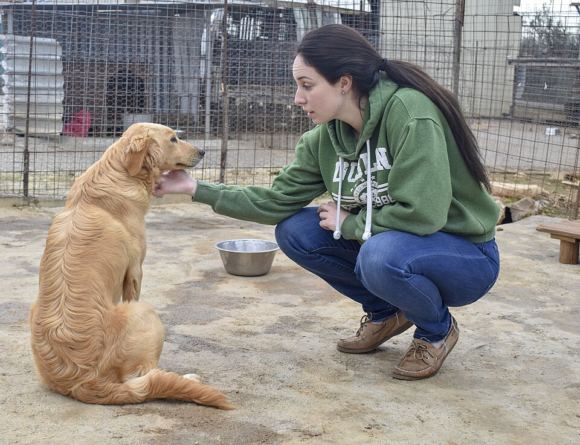

„Ich kriege das schon hin."
Wenn Zeit, Geld oder Platz jetzt schon eng sind, wird das Tier später die Rechnung zahlen.
Die Entscheidung für ein Tier ist fast immer emotional. Das ist menschlich. Aber ein Tier braucht mehr als gute Absichten.

Die wichtigste Frage ist: Welches Leben kann ich einem Tier wirklich geben? Genau an dieser Stelle wird die Seite teilbar: für Menschen, die kurz vor einer Anschaffung stehen und noch offen genug sind, ehrlich zu prüfen.
Die meisten Menschen kaufen ein Tier, ohne vorher zu recherchieren. Du nicht. Du liest. Du fragst dich, ob du bereit bist. Das allein zeigt mehr Verantwortungsbewusstsein als 90 % der Tierhalter je aufbringen. Was auch immer du nach dem Lesen entscheidest – du gehst mit offenen Augen in diese Entscheidung.
„Ich will einen Hund." Das ist ein Satz über den Menschen, nicht über den Hund. Hinter dem Wunsch steckt meistens etwas: Einsamkeit, Kindheitserinnerungen, das Bild vom treuen Begleiter auf Spaziergängen, das niedliche Welpen-Video auf Instagram. Das Tier wird zum Versprechen – auf Nähe, Routine, bedingungslose Zuneigung.
Dass dieses Versprechen Gegenleistungen fordert, wird oft verdrängt. Nicht aus Bosheit oder Dummheit. Sondern weil der emotionale Impuls stärker ist als der rationale Abgleich mit dem eigenen Alltag. Wer sich verliebt hat – in ein Tier, ein Bild, eine Vorstellung –, rechnet nicht nach, ob das Budget für Tierarztrechnungen reicht.
Die meisten Menschen überschätzen ihr Wissen dramatisch. Sie sind mit einem Hund aufgewachsen, also „wissen sie, wie Hunde funktionieren". In Wirklichkeit wissen sie, wie sich ihre Kindheit angefühlt hat. Die Perspektive des Tieres war nie Teil der Gleichung. Niemand hat ihnen als Kind erklärt, dass der Familienhund den ganzen Tag allein war, während alle in der Schule oder bei der Arbeit saßen.
Das gilt für alle Tierarten. Wer als Kind einen Hamster im Kinderzimmer hatte, weiß nicht, wie Hamsterhaltung funktioniert – sondern wie es war, einen Hamster im Kinderzimmer zu haben. Das sind zwei verschiedene Dinge.
Ein Hund, der acht Stunden still in der Ecke liegt, hat nicht gelernt, allein zu sein. Er hat aufgehört, darauf zu hoffen, dass jemand kommt. Das sieht für uns nach einem „braven Hund" aus. Für den Hund ist es Resignation.
Das ist das gefährlichste Missverständnis in der Tierhaltung: Die Abwesenheit von sichtbarem Leid wird mit Wohlbefinden gleichgesetzt. Der Hund hat nicht in die Wohnung gepinkelt, also geht es ihm gut. Die Katze schläft den ganzen Tag, also ist sie zufrieden. Der Wellensittich sitzt still auf der Stange, also braucht er nichts.
Tiere – besonders Beutetiere wie Vögel und Kaninchen – verbergen Schmerz und Stress instinktiv. Ein Tier, das leidet, sieht oft aus wie ein Tier, das „pflegeleicht" ist. Wer nur darauf achtet, ob das Tier Probleme macht, verpasst die Frage, ob das Tier Probleme hat.
Das klingt hart, aber es stimmt. Und es ist nicht mal verwerflich – solange man sich dessen bewusst ist.
Das Tier hat sich nicht ausgesucht, bei dir zu leben. Du hast es ausgesucht. Es kann nicht kündigen, sich nicht beschweren, nicht ausziehen. Dieses Machtgefälle erzeugt eine Pflicht. Ähnlich wie bei Kindern: Du hast dich für dieses Lebewesen entschieden, jetzt schuldest du ihm alles.
Das heißt nicht, dass man keine Tiere halten sollte. Es heißt, dass man die Entscheidung mit offenen Augen treffen muss. Nicht als Lifestyle-Accessoire, nicht als Trostpflaster, nicht als Projekt für die Kinder. Sondern als bewusste Übernahme von Verantwortung für ein empfindendes Wesen – über Jahre, manchmal Jahrzehnte.
Viele Menschen, die ein Tier abgeben, holen sich bald darauf ein neues. Warum?
Weil der Wunsch nach Tier nicht verschwunden ist. Die Einsamkeit ist noch da, die Sehnsucht nach Nähe auch. Und weil die Verantwortung externalisiert wird: „Das Tier war schwierig." „Die Rasse war falsch." „Wir hatten Pech." Selten: „Ich war nicht vorbereitet."
Das ist keine Boshaftigkeit. Es ist kognitive Dissonanz – ein psychologischer Schutzmechanismus. Wer sich eingestehen müsste, dass er einem Lebewesen geschadet hat, verlagert die Schuld lieber nach außen. Und weil sich an der Lebenssituation nichts geändert hat, passiert beim nächsten Tier dasselbe.
Wenn Zeit, Geld oder Platz jetzt schon eng sind, wird das Tier später die Rechnung zahlen.
Genau deshalb ist die Verantwortung größer: Das Tier kann nicht kündigen, ausziehen oder widersprechen.
Diese Seite gehört zu Menschen, die gerade „nur mal schauen" und innerlich schon entschieden haben.
Wir alle erzählen uns Geschichten, um schwierige Entscheidungen zu rechtfertigen. Das ist menschlich. Aber bei Tieren hat es Konsequenzen. Hier sind die häufigsten – und eine ehrliche Einordnung:
Was du meinst: Du projizierst menschliche Konzepte wie „Männlichkeit" oder „Freiheit" auf dein Tier.
Was dein Kater erlebt: Hormonstress. Der Drang, ein Revier zu verteidigen, das er nicht verteidigen kann. Kämpfe mit anderen Katern. Bissverletzungen. FIV. Ein deutlich kürzeres Leben.
Die ehrliche Frage: Geht es um ihn – oder um dein Bild von ihm?
→ Mehr dazu: Kastration
Was du meinst: Du hast Angst vor dem Unbekannten. Ein Welpe ist ein unbeschriebenes Blatt, ein Tierheimtier hat „Gepäck".
Die Realität: Die meisten Tierheimtiere sind dort, weil Menschen versagt haben – nicht die Tiere. Scheidung, Umzug, Überforderung, Allergie. Das Tier selbst ist oft völlig unproblematisch.
Der Vorteil: Tierheime kennen ihre Schützlinge. Sie können dir sagen, wie das Tier mit Kindern, anderen Tieren, Alleinsein umgeht. Beim Züchter kaufst du ein Versprechen. Im Tierheim lernst du ein Tier kennen.
→ Mehr dazu: Adoption statt Kauf
Was du meinst: Platz = Auslastung. Großer Garten = glücklicher Hund.
Die Realität: Ein Hund im Garten ist ein Hund, der wartet. Er kennt jeden Grashalm nach einer Woche. Er braucht keine Quadratmeter – er braucht dich, neue Reize, Erkundung, Sozialkontakt.
Die ehrliche Frage: Wäre ein Garten ein Ersatz für deine Zeit? Dann passt ein Hund gerade nicht zu deinem Leben.
→ Mehr dazu: Hunde
Was du meinst: „Ich will es so sehr, dass ich mir die Rahmenbedingungen schönrede."
Die Realität: „Irgendwie" bedeutet: Das Tier bekommt das Minimum. Oder du bist dauerhaft im Stress. Oder beides.
Die ehrliche Frage: Wenn du jetzt schon weißt, dass es eng wird – warum tust du dir und dem Tier das an? Warten ist keine Niederlage. Es ist Fürsorge.
→ Mehr dazu: Noch nicht bereit?
Was du meinst: Ein gutes Angebot. Rassehund zum Schnäppchenpreis.
Die Realität: Seriöse Züchter verkaufen nicht über Kleinanzeigen. Ein Rassehund für 400 Euro bedeutet: irgendwo wurde gespart. An der Gesundheitsvorsorge. An der Sozialisation. An den Lebensbedingungen der Mutter.
Die versteckten Kosten: Parvovirose-Behandlung (2.000–5.000 €), HD-OP (3.000–6.000 €), Verhaltenstherapie wegen Frühentwoehnung (1.500+ €). Der „günstige" Welpe wird der teuerste Hund deines Lebens.
→ Mehr dazu: Unseriöse Quellen erkennen
Wenn dein Alltag nicht zu einem Tier passt – wenn du zehn Stunden arbeitest, viel reist, wenig Platz hast, knapp bei Kasse bist –, dann ist die Entscheidung, kein Tier zu halten, kein Versagen. Sie ist ein Akt von Verantwortung.
Wir müssen aufhören, Tierverzicht als Schwäche darzustellen. Wer sagt „Ich hätte gern einen Hund, aber mein Leben gibt das gerade nicht her", hat mehr Empathie für das Tier als jemand, der trotzdem einen holt und hofft, dass es irgendwie klappt.
Nicht Vorwürfe. Das wissen wir aus jeder Verhaltensforschung. Beschämung erzeugt Abwehr, nicht Einsicht. Was funktioniert:
Es gibt Situationen, in denen Tierhaltung trotz bester Absichten scheitert. Jobverlust, Krankheit, Trennung, ein Umzug in eine Wohnung, die keine Tiere erlaubt. Das passiert. Das ist kein Verbrechen.
Was ein Verbrechen ist: das Tier aussetzen, im Wald anbinden, am Rastplatz zurücklassen. Aussetzen ist nach dem Tierschutzgesetz strafbar und kann mit einer Geldstrafe bis zu 25.000 Euro geahndet werden.
Der richtige Weg: Das Tierheim kontaktieren. Ehrlich sein. Hilfe annehmen. Viele Tierheime und Tierschutzorganisationen vermitteln Tiere weiter und bieten Beratung an, wenn die Situation noch nicht aussichtslos ist. Und manchmal gibt es Lösungen, an die man allein nicht gedacht hat – eine Pflegestelle, vorübergehende Betreuung, finanzielle Unterstützung. Mehr zum Ablauf einer Adoption findest du unter Adoption statt Kauf.
Wa(h)re Haustierliebe ist ein privates Projekt – werbefrei, unabhängig und ehrenamtlich. Die laufenden Kosten für Hosting, Domain und Recherche tragen wir selbst. Wenn dir diese Seite geholfen hat, freuen wir uns über Unterstützung – für uns oder direkt für den Tierschutz:
Spenden an uns als Privatpersonen sind nicht steuerlich absetzbar. Die Streunerhilfe Plau e. V. ist ein eigenständiger gemeinnütziger Verein – dort ist deine Spende steuerlich absetzbar und fließt direkt in die Versorgung und Kastration von Streunerkatzen.